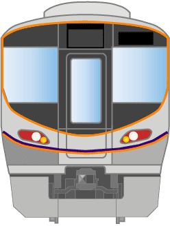

60秒
0周 / 0駅
おおさか
大阪

次の駅まで…
10.0秒
大阪環状線タイピング
駅名を入力して電車を加速させよう！
乗車時間を選択
60秒
90秒
120秒
内回り
大阪→福島 ほうめん
ベスト:
0周 0駅
外回り
大阪→天満 ほうめん
ベスト:
0周 0駅
使ったお金
0
円
発車準備が完了しました
スペースキーを押してね
SPACE
ご乗車ありがとうございました
そうこうきょり
0
周
0
駅
正解:
0
ミス:
0
スピード:
0
WPM
苦手キー:
-
JR西日本
大阪環状線
大阪
▶
0
円
小児
0
円
実際の運賃とは異なります
もういちど乗る